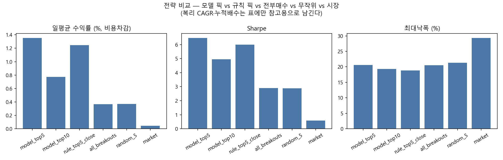

돌파폭 · 거래량배수 · 마감강도 · 베이스 길이 · 변동성 수축 · 200일선 기울기 · 52주 저점 대비 위치
왜: 돌파의 '질'을 나타내는 값들. 같은 신고가라도 종가가 고가 근처에서 끝났는지가 다르다.
20일 평균 갭 · 갭 변동성 · 당일 갭 · 일중 변동폭 · 윗꼬리 · 시장 전일 갭 · 요일
왜: 예측 대상이 오버나이트 갭이므로, 그 종목이 평소 갭을 어떻게 내는지가 직접적인 정보다.
KBAR 9종(KMID·KLEN·KUP·KLOW·KSFT) + 롤링 11종(RSV·CORR·CNTP·SUMP·WVMA·BETA·RSQR·IMAX·QTLU)
왜: Microsoft qlib의 Alpha158 정의를 그대로 이식. 외부에서 검증된 팩터를 기준선으로 두기 위해서다.
재료 유형 · 유사사례 평균수익 / 외국인·기관 순매수(1일·5일) · 외국인 연속순매수
왜: 가격에 아직 반영되지 않은 정보가 있다면 여기일 것이라는 가설.
F4의 유사사례 평균수익은 학습 폴드로 적합한 뒤 그 폴드 행을 조회하면 자기 자신을 유사도 1.0의 최근접 사례로 찾아 정답을 그대로 읽어온다. 학습 폴드 1,281행 중 939행(73.3%)이 해당됐다. 쿼리 행을 명시적으로 배제했다 — 이 수정은 성능을 낮추는 방향이지만 방법론의 정직성 문제이므로 적용했다.
2023 · 2024 · 2025 · 2026을 각각 검정 연도로 두고, 그 이전 데이터로만 학습하는 4개 폴드. 학습 끝과 검정 시작 사이에 5거래일 임베고를 둬서 라벨 기간이 겹치지 않게 한다.
하루에 이벤트가 몰리면 그날이 과대대표되므로, 1/(그날 이벤트 수)로 표본 가중치를 준다.
| 검증 방식 | AUC | IC |
|---|---|---|
| 셔플 K-fold | 0.6004 | +0.1354 |
| walk-forward | 0.5645 | +0.1517 |
셔플 K-fold가 부풀리는 AUC. 미래 데이터가 학습에 섞여 들어간 결과이며, 방향이 예상과 일치한다. 시계열에서 무작위 분할은 성능을 만들어낸다.
시장 전체가 종가→익일시가 구간에서 평균적으로 오른다 (오버나이트 드리프트). 이걸 빼지 않으면 시장을 사기만 해도 얻는 수익을 전략의 성과로 착각하게 된다.
시장 조정 후에도 t = 8.81로 초과수익은 남는다. 그러나 크기는 절반이다.
평균 +0.47%는 전체 23,654건을 다 샀을 때의 값이고, 순이익 확률은 44.6%로 절반도 안 된다.
아무 돌파나 사는 것은 좋은 전략이 아니다.
골라낼 수 있어야 한다.
예측 CLI가 오늘자 종목에 "익일 순이익 확률 89.0%"를 찍었다. 검정 구간에서 그 수준의 실제 빈도는 60%대였다.
확률 보정(isotonic)을 모델이 이미 외운 학습 예측 위에 적합하고 있었다.
분류기는 학습에서 AUC 0.82, 검정에서 0.60이다. 그 격차 위에서 보정은 "원확률 0.9 = 진짜 0.95"를 배우고, 검정의 0.9(실제로는 0.6쯤)에 그대로 적용한다 — 과신을 교정하는 대신 증폭한다.
| 모델이 말한 확률 | 실제 빈도 | 격차 |
|---|---|---|
| 4.8% | 34.1% | +29%p |
| 95.6% | 68.8% | −27%p |
| 확률 산출 방식 | Brier ↓ |
|---|---|
| 학습예측 보정 (옛 방식) | 0.2802 |
| "무조건 43.2%" 상수예측 | 0.2552 |
| OOF 보정 (수정) | 0.2430 |
옛 방식은 아무 정보 없이 항상 기저율을 말하는 것보다 나빴다.
학습 구간 안에서 다시 시간순으로 나눠 out-of-fold 예측을 만들고, 그 위에 isotonic을 적합했다. 학습-검정 격차가 보정에 반영되므로 과신이 실제로 교정된다. Brier 0.2802 → 0.2430, 잔여 편향은 전부 과소 방향(보수적인 쪽). 예측 CLI 출력도 89.0% → 66.0%로 정상화됐다.
검정 구간 14,610건 · 880거래일 · 학습에 쓰이지 않은 데이터
| 선별 방식 | 픽 | 순이익 승률 | 평균 수익 |
|---|---|---|---|
| 그냥 52주 돌파 (전부 매수) | 14,610 | 45.5% | +0.55% |
| ML 확률 ≥ 0.50 | 1,942 | 64.2% | +3.37% |
| ML 확률 ≥ 0.55 | 1,179 | 69.7% | +4.65% |
| ML 확률 ≥ 0.60 | 960 | 72.6% | +5.12% |
단일 지표에는 임계값이 없으므로 사후에 상위 1,179개를 뽑게 해줬다 — 미래를 아는 셈이라 규칙 쪽에 유리한 핸디캡이다. 모델은 사전에 고정된 임계값만 쓴다.
| ML 보정확률 ≥ 0.55 | 69.7% | +4.65% |
| RSV_20 상위 (사후) | 63.6% | +3.98% |
| 마감강도 상위 (사후) | 61.2% | +3.65% |
| 무작위 | 45.5% | +0.55% |

| 구분 | n | 승률 | 평균 |
|---|---|---|---|
| 뽑힌 종목 | 1,179 | 69.7% | +4.65% |
| 같은 날 안 뽑힌 종목 | 9,968 | 44.3% | +0.25% |
| 픽이 없던 날 전체 | 3,463 | 40.6% | +0.04% |
같은 날 안에서 격차가 승률 +25.4%p · 수익 +4.41%p다 — 날짜 타이밍이 아니라 종목 선정력이 대부분을 설명한다.
| 연도 | 기저 | ML | 최고 규칙 | 수익 우위 |
|---|---|---|---|---|
| 2023 | 43.7% | 68.9% | 59.5% | +37.9% |
| 2024 | 40.3% | 61.9% | 60.0% | −15.1% |
| 2025 | 45.3% | 71.3% | 61.4% | +37.6% |
| 2026 | 50.5% | 74.0% | 73.6% | +2.4% |
IC도 상위10% 수익률도 날짜 안에서만 계산된다. 그래서 "오늘은 확신이 없으니 사지 않는다"의 가치를 구조적으로 볼 수 없다. 매일 반드시 상위 10%를 사야 하는 운용점에서 재면 모델은 단일 지표를 7~15%밖에 못 넘지만, 쉴 수 있는 운용점에서는 결과가 달라진다. 두 결론은 모순이 아니라 서로 다른 운용점이다.
4개 폴드를 여러 차례 들여다보며 버그를 고치고 재실행했다. 한 번도 보지 않은 데이터는 남아 있지 않다. 이 연구의 가장 큰 구조적 한계다.
픽의 74%가 상한가라 종가 체결을 가정할 수 없다. 나머지도 종가 매수는 동시호가를 밀어올리고 시가 매도는 시가를 누르는데, 일봉 데이터로는 측정 자체가 불가능하다.
원시 비교에선 재료가 붙은 이벤트가 크게 높지만 교란돼 있다 — 재료 출처가 '그날의 특징주'라 곧 크게 움직인 종목이라는 뜻이다. 통제 후 다중검정을 통과하지 못했다 (BH p=0.243). '효과 없음'이 아니라 '표본 부족'이다.